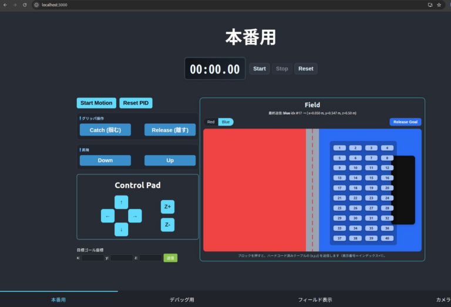
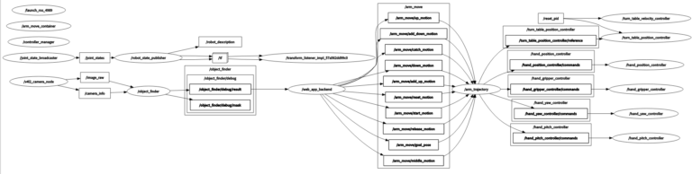
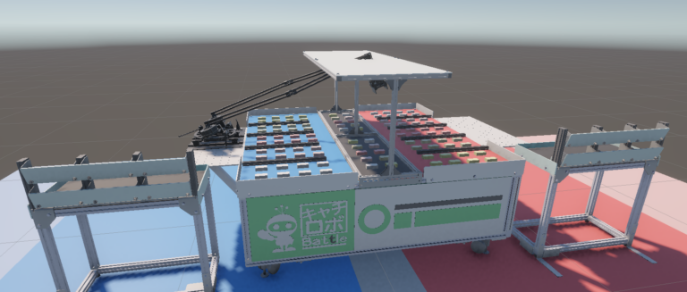

活動内容
WebGUIを開発
- ワークに対応したボタンを押すことで目標位置をロボットに伝達
- フロントエンドはReactでバックエンドはGoを採用
- Goを使ってROS2のネットワークにつなげるためにrclgoを使用
- Dockerを使用して環境に依存せずアプリを起動
- FrontendとBackendを切り分けるモダンな実装を心掛けた
- フロントエンドはChatGPTをメインに使用してバイブコーディングで開発
- 実際に作成したリポジトリはこちら

作成したGUIの見た目
ROS2を使用した制御
- NHK学生ロボコンと同様にROS2とros2_controlを使用
- 目標位置から5節リンクのジョイント角度を求める逆運動学を解くノードを作成（リポジトリはこちら）
- 各モータの角度、速度、電流をM5Stackにシリアルで流すHardWare Componentsを作成（リポジトリはこちら）
- ros2_controlのControllersはPID ControllerとPosition Controllerを使用
- ROS2およびros2 controlを使用することで既存のコントローラーを使うことができ開発効率が向上

ノードの関連性の様子
シミュレーション
- ロボットの動作を確認するためにUnityでシミュレーション環境を作成
- ROS2とのやり取りにros2-for-unityを使用
- ロボット実機が完成するまでの動作確認に使用
- 実際に作成したリポジトリはこちら

Unityシミュレーションの様子
学園祭で展示
- Nintendo SwitchのJoy-Conのジャイロ機能を使用して五節リンクの根元の角度を決定し操縦
- 制限角度の場合に振動させることでインタラクティブな操作体験
- 開発したWebGUIをVR上に表示することでVRゴーグルからロボットを操作